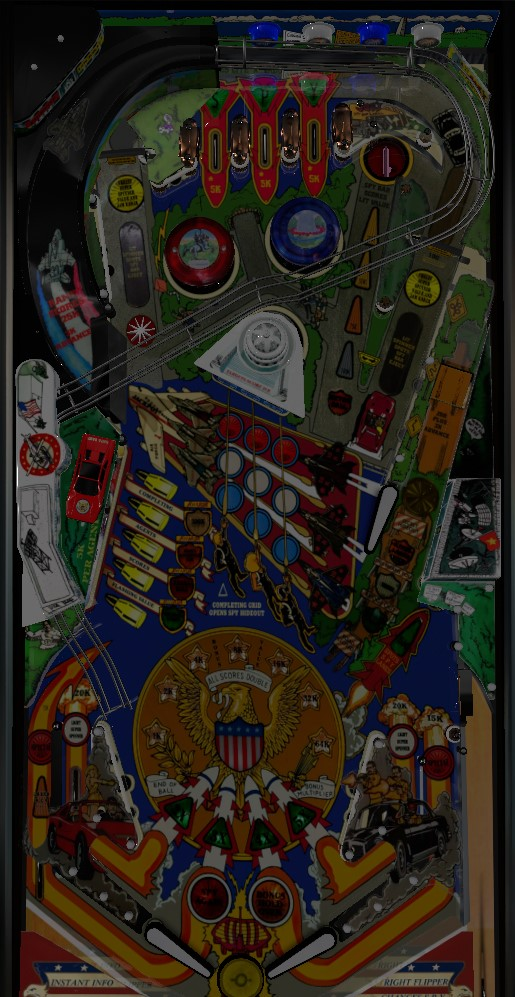

Try to always be in 3-ball multiball. Hit each of the center targets three times each to light the Hideout shot underneath the right flipper for instant 3-ball; for the first 3-ball of the game, you can also shoot the center target corresponding to the moving flashing column to complete the grid instantly at the very beginning of the game. Jackpot is the side ramp; it is a progressive jackpot that can only be scored once per multiball. In any multiball, the Hideout shot scores 100,000. When the ball goes through either in lane, reflex the opposite spinner as quickly as possible for a big end-of-game bonus.
A full plunge will send the ball up the side ramp and into the White House. The game wants there to always be 1 ball locked here, so if there isn't one and you full plunge, a ball will get locked in the White House and you will be fed a second ball to plunge. If you full plunge and there is a ball in the White House, it will be kicked out and the plunged ball will take its place in the lock. You can bypass both of these by short plunging the ball, but there's not really any reason to do so, because the kickout from the White House puts the ball in control and on a flipper much more reliably than a short plunge. If there is no ball locked in the White House during gameplay, any shot to the side ramp will lock a ball there and feed a new ball to be plunged.
3-ball multiball is the main goal of the game, and the only way to score the game's progressive jackpot. To light the Hideout lane under the right flipper for Instant 3 Ball, you need to complete the grid of lights corresponding to the standup target bank in the center of the table. When qualifying the first multiball, one column of lights in the grid will be lit at a time, rotating every few seconds; hitting the target in front of a lit column will instantly clear the entire grid, scoring 150,000 points and qualifying the Hideout lane for Instant 3 Ball. If it is not the first multiball, or if you miss the moving lit column, you must hit each of the three targets three times each to light the full grid and qualify 3 ball. Shoot the Hideout lane under the upper right flipper when it is lit green to instantly start 3-ball multiball.
Immediately after shooting the Hideout lane, a new ball is fed to the plunger. Always full plunge this new ball. If there is no ball locked in the White House already, you will lock a ball in the White House first, then be fed a new ball to plunge. If you lock a ball in the Hideout, and there is no ball already in the White House, and you short plunge the ball fed to the shooter lane, you will play 3-ball multiball with only 2 balls. Avoid this situation by always full plunging after making the Hideout lock to ensure you play a 3-ball multiball.
In multiball, the main feature is the jackpot. Jackpot is available immediately and scored by shooting the side ramp. Only one jackpot is available per multiball. The jackpot starts at 200,000 points and increases by the value of any playfield scoring earned during the multiball. It is also a progressive jackpot that carries over across players and games until it is collected. The jackpot can definitely exceed 1,500,000 points; I do not know its exact maximum, but I would be surprised if it is much higher than 2,000,000 or 2,500,000. Once the jackpot is collected, it resets to 200,000 points, and cannot be built any more during that multiball. There is a very long celebration sequence when the jackpot is scored that includes about 15 seconds of intensely flashing lights. The ball that is shot up the side ramp to collect the jackpot will stay in the White House indefinitely, and is only kicked out if the side ramp is made again or if all other ball(s) leave the playfield. Also, after the jackpot is made, any shot to the Hideout lock for the remainder of multiball scores 100,000 points.
Completing the entire center grid of 9 lights during multiball lights the out lanes for special.
Knocking down any target in the 5-bank on the left side of the playfield starts a timer that is about 40 seconds long. The timer is not directly shown to the player, but a female voice will count down from 5 when it is about to expire. If the target bank is not completed within this time, the entire bank resets; if it is completed, the currently flashing award on the playfield is scored. If there is currently a ball locked in the White House, the flashing award will always be Instant 2 Ball, a 2-ball multiball. If there is not a ball locked in the White House, the award will usually be 100,000 points, but it will occasionally be Extra Ball or Bonus Holdover + 50,000 points if Shoot Again and Hold Bonus respectively have not already been lit.
In 2-ball multiball, the jackpot and the out lane special from completing the center targets are not available. However, the Hideout lane on the right is lit for 100,000 points from the start, and making the side ramp, the Hideout lane, or the upper right saucer will start 2x Playfield Scoring for about 10 seconds. Super Spinner values are the only thing not affected by the playfield multiplier. The best thing to aim for in 2-ball multiball is generally the 100,000-point Hideout lane.
Spinners always add 100 points per spin to the score. Immediately after going through an in lane, the opposite spinner will be lit for Super Spinner. Super Spinner is a hurry-up that starts at 2,000 points and quickly counts down to 500 points over about 10 seconds. When the lit spinner is hit, the hurry-up value is locked in, and every spin of the spinner adds the locked-in value to the Super Spinner bank. The value of the Super Spinner bank is awarded at the end of the game alongside the final ball's end of ball bonus, so do not tilt on your final turn.
The upper right Spy Bar saucer has a value that starts at 25,000 points. Hitting a lit Super Spinner- even if it is only for one spin- increases the value by 25,000 points, up to a maximum of 100,000 points. If Shoot Again is not already lit, the Spy Bar value can be advanced one step further to score Extra Ball. After any Spy Bar award is collected, the upper right saucer's value resets to 25,000 points.
Roll through an unlit top lane to light it. Light all three top lanes to spell Spy, increasing the bonus multiplier toward its maximum of 5x. The green lower right standup target will also spot a letter in Spy, and the side ramp can be set to spot a letter in Spy as well.
Secret Service has a conventional in/out lane setup. In lanes score 20,000 points and light the opposite spinner for Super Spinner. Out lanes score 15,000 points and can be lit alternately for special after completing the center target grid during a 3-ball multiball.
There is a kickback in the left out lane. It is usually only lit for free at the start of the game, and unlights once used. When the kickback is not active, shoot the Hideout lane to relight it. A game setting can make it so that the side ramp also relights the kickback.
There is a center post between the flippers that temporarily and completely blocks off the center drain. It is raised for a few seconds after any successful Super Spinner shot, any side ramp shot, any Hideout lane shot, or at the beginning of multiball. The post will flash increasingly quickly, then lower on its own.
Most lanes and targets around the table advance bonus; I have not determined the exact distribution. Max base bonus is 127,000 points, and it's not too hard to max out the base bonus. Bonus multiplier is advanced up to 5x by completing the top lanes, and top lanes can be spotted by the side ramp or the lower right standup target. Bonus cannot be collected mid-ball. Bonus holdover can be scored as a left drop target completion award, or by hitting the side ramp enough times (not exactly sure what causes this). Bonus hold carries over your base bonus, but multipliers are always reset. Do not tilt the final ball of the game, because your Super Spinner bank- all of the points you earned from locked-in Super Spinner values throughout the game- is awarded as part of the final ball bonus, after the standard bonus countdown. Spinner bonus is not affected by bonus multiplier. If Hold Bonus is lit on the final ball of the game, your base bonus will be recollected with a 1x multiplier one additional time.
I do not know exactly what scores can be assigned to an extra ball or special for competition/novelty play; I would expect something close to 250,000 or 500,000 points.
The Spy Bar upper right saucer can be set to relight the kickback.
The side ramp can be set to spot a Spy top lane and/or relight the kickback any time it is made.
Completing the Spy top lanes when the bonus multiplier is maxed at 5x can be set to light the extra ball at the Spy Bar saucer.
The number of center targets needed to light the out lane special during 3-ball multiball can be set to anywhere from 3 to all 9.
The starting value for Super Spinner hurry-up can be anywhere from 1,000 to 5,000.
The left out lane kickback can be set to light up for free at the beginning of all balls, not just the first one.
The drop target timer and up post timer can be set to easy, medium, or hard lengths.